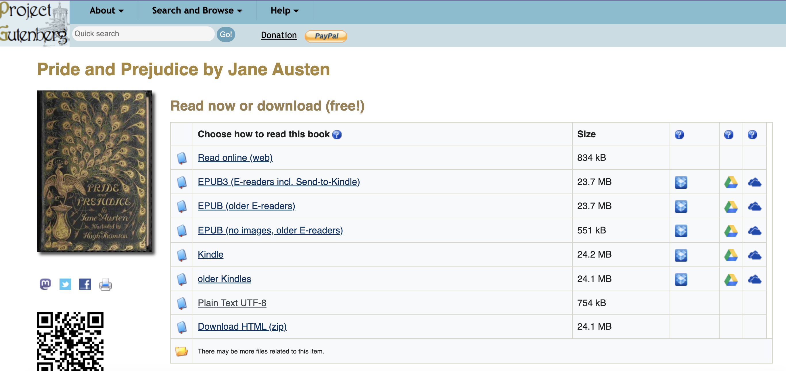
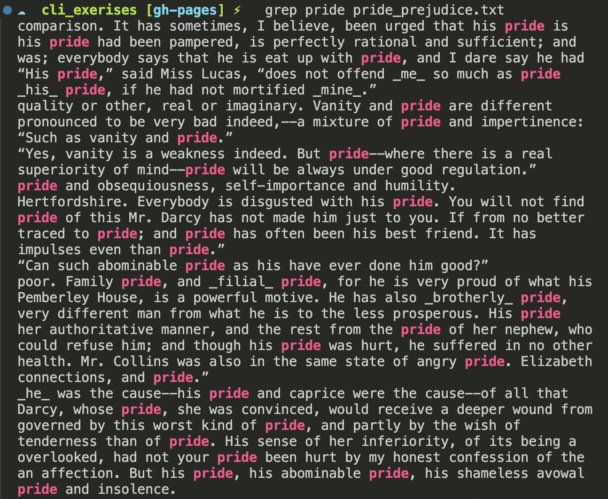

Introduction to Version and File Histories
What are files, and how can we work with them from the command line?
From GUI to Command Line
Recap: The Command Line
We’ve learned how to:
- Create directories with
mkdirin Linux/Unix orNew-Item -ItemType Directoryin PowerShell - Navigate with
cdandpwdORSet-LocationandGet-Location - List contents with
lsORGet-ChildItem - Create files with
touchORNew-Item
But what exactly are files?
Introducing File Formats

The Many File Formats
What is a File? A Somewhat Reductive Answer
A file is a collection of data stored in a single unit, identified by a filename.
Files can be:
- Documents
- Images
- Videos
- Audio
- Any other collection of data
File Extensions
The file extension is the part of the file name after the period.
| Extension | Type |
|---|---|
.docx |
Microsoft Word document |
.jpg |
Image file |
.mp3 |
Audio file |
.txt |
Plain text file |
.md |
Markdown file |
Proprietary vs Open Formats
Proprietary formats are owned by a company, like how Microsoft Word owns the format of .doc or .docx, which means a file with that extension can only be read in Word.

What is this?

Proprietary All the Way Down
To be clear, .doc was invented in 1983 along with the first version of the software for Microsoft Word which ran on MS-DOS, whereas .docx was only introduced in 2007 as part of an XML-based update to the software.

What Are Open Source File Formats?
Open source formats can be opened by many programs and are not owned by one company.
.txtfiles work with any text editor.csvfiles work with any spreadsheet software- Main benefit? More sustainable and portable
Plain Text vs Formatted Text
A Word Document and a .txt file might look the same…
But Word contains hidden formatting that .txt does not.
In programming, we want to be explicit - so plain text is preferable.
What is Plain Text? The Unicode Definition
According to the Unicode Standard:
Plain text is a pure sequence of character codes; plain Unicode-encoded text is therefore a sequence of Unicode character codes.
Key concept: Plain text shows if it is formatted or not (we call this markup), and usually contains no formatting.
Why Plain Text Matters
Plain text is:
- Portable - moves between programs easily
- Manipulable - responds to programmatic operations
- Sustainable - doesn’t require specific software
Edited in a text editor like VS Code
Example: Project Gutenberg

Downloading Files from the Command Line
The curl Command
curl= “client URL” - downloads files from the internet>= redirect output to create a new file- Result: a
.txtfile with the book’s text
Windows Alternatives
Using WSL or Git Bash:
Working with Text Files
Displaying File Contents
cat = concatenate
- Displays the contents of a file
- For long files, you’ll only see the end without scrolling
Counting Words
wc= word count-wflag = count words- Try it! How many words in Pride and Prejudice?
Counting Lines
-lflag = count lines- Pride and Prejudice has 14,911 lines!
Searching for Text

Counting Occurrences
How many times does “pride” appear?
Result: 43 times
Your turn: How many times does “prejudice” appear?
Command Summary
| Command | What it does |
|---|---|
curl / wget |
Download files from the web |
cat |
Display file contents |
wc -w |
Count words |
wc -l |
Count lines |
grep |
Search for text |
grep -c |
Count occurrences |
Introducing Markdown

What do you know about Markdown?
What is Markdown?
- A plain text file format (
.md) - Uses symbols to add formatting
- You’ve already seen it:
README.mdfiles!
Like .txt, but with lightweight formatting capabilities.
Creating a Markdown File
Adding Bold Text
Put two asterisks on either side:
Renders as: Computing in the Humanities is defined as …
Adding Italics
Put one asterisk on either side:
Renders as: Computing in the Humanities is defined as …
Adding Headings
Put a hashtag in front:
Different levels:
#= Heading 1##= Heading 2###= Heading 3
Previewing Markdown in VS Code

Markdown Preview
Click the preview icon in VS Code’s top right corner
Why Markdown? Advantage 1: Sustainability
Plain text is future-proof
- No license required
- No special software needed
- Works forever
Why Markdown? Advantage 2: Platform Agnostic
Can be rendered by any text editor
- Works on Mac, Windows, Linux
- Works on web, desktop, mobile
- No vendor lock-in
Why Markdown? Advantage 3: GitHub Integration
GitHub renders Markdown automatically
README.mddisplays on repository pages- Easy to share documentation
- Integrates with version control
Markdown: A Brief History

Markdown was created by John Gruber with Aaron Swartz in 2004.
Markdown: A Brief History
The goal was to create a file format that was easy to read and write, could be converted into web documents, and could be used by anyone. You can read more about the history of Markdown, in Bednarski, Dawid. “The History of Markdown: A Prelude to the No-Code Movement.” Taskade Blog, March 25, 2022. https://www.taskade.com/blog/markdown-history/.
Markdown Flavors

GitHub Flavored Markdown (GFM)
Created by GitHub in 2009
Adds features like:
- Tables
- Task lists
- Syntax highlighting
- Autolinks
CommonMark Markdown
CommonMark is another popular Markdown style and improvements to it are discussed in this repository https://github.com/commonmark/commonmark-spec/issues.
First Exercise
Currently, your README.md is your first assignment Init IS310 Homework. But what be some problems with this approach?
README.mdshould indicate structure of repo, not be one assignment
init_is310
However, that is not very sustainable for the course since all your assignments will be in that folder. So, your first goal is to clean up your repository so that your first homework assignment has it’s own folder init_is310, which contains your initial README.md and any images.
Improve Your README.md
Then you will create a new README.md file in the root of your is310-coding-assignments that will be the main home page for your homework repository.
Try adding:
Bonus: Add a link to our course website!
Helpful Resources
- GitHub Markdown Cheatsheet
- AI tools (GitHub Copilot, etc.)
- VS Code Markdown Preview
Push your changes to GitHub when done!
Homework: Lost & Found in the Cultural Command Line

Why a Cultural Data Maze?
This assignment has two goals:
- Explore the cultural framing for your broader topic of interest
- See how your group members each approach the same topic differently
Your maze should be themed around your cultural data topic of interest.
Part 1: Build a Maze About Your Cultural Data
Create a command line maze themed around your cultural data topic of interest for your group members to solve! First, you should create a new folder in your is310-coding-assignments repository called command-line-maze. Inside this folder, you should create a maze using directories and files.
Maze Requirements
Your maze should have:
Documentation Required
Include a README.md in your maze folder:
- Instructions for solving the maze
- List of commands that might be helpful
- Your name and maze name as a header
Do NOT zip the README!
Zipping Your Maze
Mac/Linux/WSL:
Submission
- Upload zipped maze to your
is310-coding-assignmentsrepo - Post link in GitHub Discussion
Need inspiration? Try the example maze
Part 2: Solve Your Group Members’ Mazes
Once your maze is posted, solve at least two mazes from students in your group!
Steps:
- Clone their repository
- Navigate to the maze folder
- Read the README.md (
cat README.md) - Unzip the maze
- Navigate and solve!
Unzipping
Mac/Linux/WSL:
Useful Commands for Solving
| Command | Use Case |
|---|---|
cd |
Navigate through directories |
ls |
See what’s in each directory |
ls -la |
Find hidden files/directories |
cat |
Read file contents |
pwd |
Check current location |
When You Solve It
For each of the two mazes you solve:
- Reply to their discussion post
- Post a screenshot of your solved maze
- Let them know you were successful!
Pay attention to how your group members framed their cultural data topic!
Additional Resources
Command Line
Questions?
Remember:
- Files = collections of data with extensions
- Plain text = portable, sustainable format
- Markdown = plain text with formatting
- Use
curl/wget,cat,wc,grepfor text work
See also: Command Line Cheatsheet